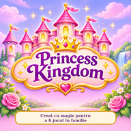

Desenul rămâne pe acest dispozitiv. Descarcă-l dacă dorești să îl păstrezi.

Regatul a primit magie nouă!
Actualizarea este pregătită. Jocul se redeschide imediat…
Creat cu magie pentru a fi jucat în familie